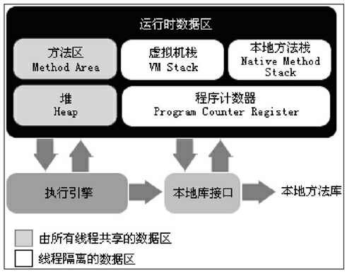

最近看了《深入理解java虚拟机》这本书，现总结一下。该篇介绍java虚拟机的内存划分：
上图：

大多数人将JVM的内存划分为堆和栈，这是有道理的，但是不是特别准确。准确的说JVM的内存可以划分为5个区域。
堆
java堆是jvm内存管理中最大的一块，线程共享。在jvm启动的时候创建。此区域唯一目的就是存放对象实例，几乎所有的对象实例都在这里分配内存。
由于现在的收集器基本都采用分代收集算法，所以java堆还可以细分为新生代和老年代，新生代中垃圾回收算法为复制算法，老年代中采用的为标记-清除算法
新生代还可以细分为Eden区和Survivor区，对象优先在Eden区域分配，大对象会直接进入老年代，长期存活的对象会进入老年代，这里的长期存活是根据新生代中的对象年龄阈值来定义的，对象刚分配到新生代的时候年龄为1，每进行一次GC对象的年龄会加1，HotSpot中默认的阈值是15，也就是说对象年龄达到15岁的时候会被分配到老年代，这个值是可以通过参数配置的。
方法区
方法区又被称为永久代，线程共享，是用来存储已被JVM加载的类信息、常量、静态变量、即时编译器编译后的代码等数据。方法区为堆的一个逻辑部分，但是在JDK1.7的HotSpot中已经将方法区中的字符串常量池移出，部分资料显示JDK1.8已经去除了方法区（不确定）。不过已经可以猜测此区域将会被本地内存逐步取代。
这个区域很少进行垃圾回收，回收目标主要是针对常量池的回收和对类型的卸载，回收的条件相当苛刻
虚拟机栈
虚拟机栈是线程私有的，它的生命周期与线程相同。JVM栈描述的是java方法执行的内存模型，每个方法在执行的同时都会创建一个栈帧，用于存储局部变量表、操作数栈、动态链接、方法出口等信息。每个方法从调用直至执行完成的过程，就对应着一个栈帧在虚拟机栈中入栈到出栈的过程。
局部变量表中存放了编译期可知的各种基本数据类型、对象的引用类型。局部变量表中需要的内存空间在编译期间完成分配，当进入一个方法时，这个方法需要在帧中分配多大的局部变量空间是完全确定的，在方法运行期间不会改变局部变量表的大小。
本地方法栈
本地方法栈和JVM栈非常相似，它们之间的区别不过是jvm栈是为执行java方法服务，而本地方法栈是为jvm使用到对的本地方法服务。HotSpot虚拟机中直接把本地方法栈和JVM栈合二为一了。例如在java中调用Python书写的程序，就需要使用本地方法栈
程序计数器
程序计数器是一块较小的内存空间，线程私有。所以每个线程内部都维护了一个程序计数器。它可以看作是当前线程所执行的字节码的行号指示器。在jvm的概念模型里，字节码解释器工作就是通过改变这个计数器的值来选取下一条需要执行的字节码指令，分支、循环、跳转、异常处理、线程恢复等基础功能都需要依赖这个计数器来完成。如果线程正在执行的是一个java方法，这个计数器记录的是正在执行的jvm字节码指令的地址；如果正在执行的是本地方法，这个计数器值则为空。